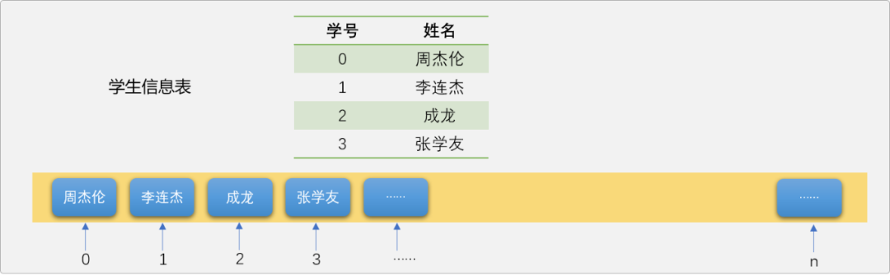
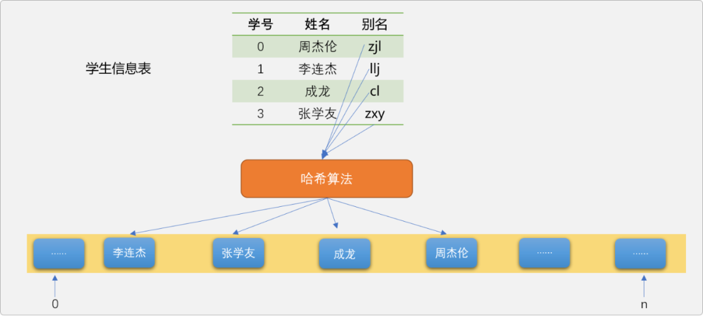
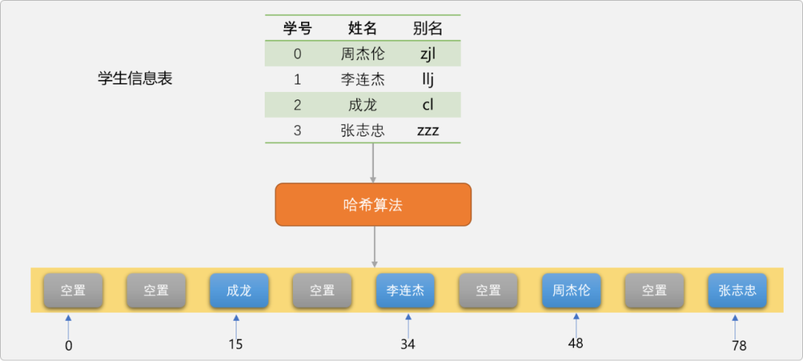
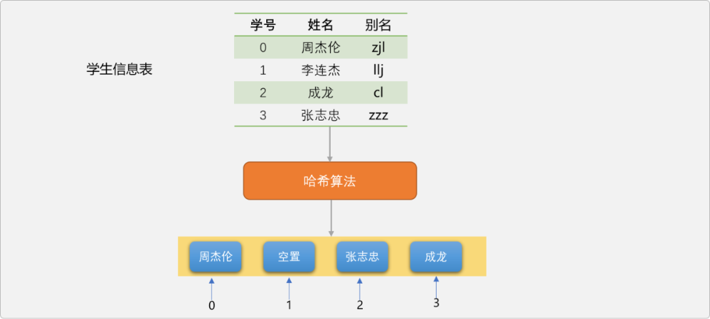
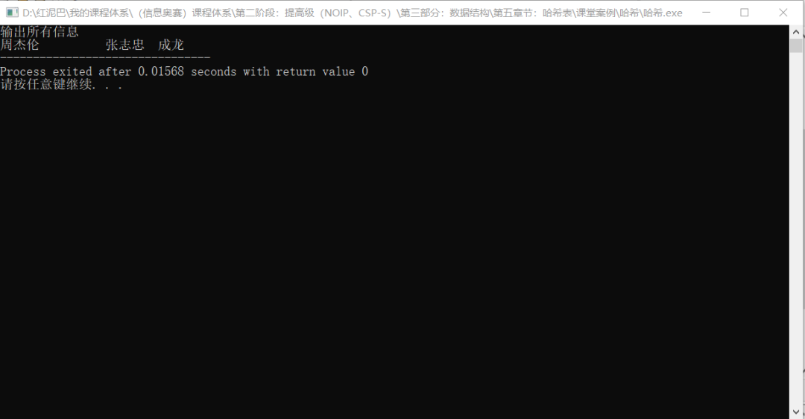
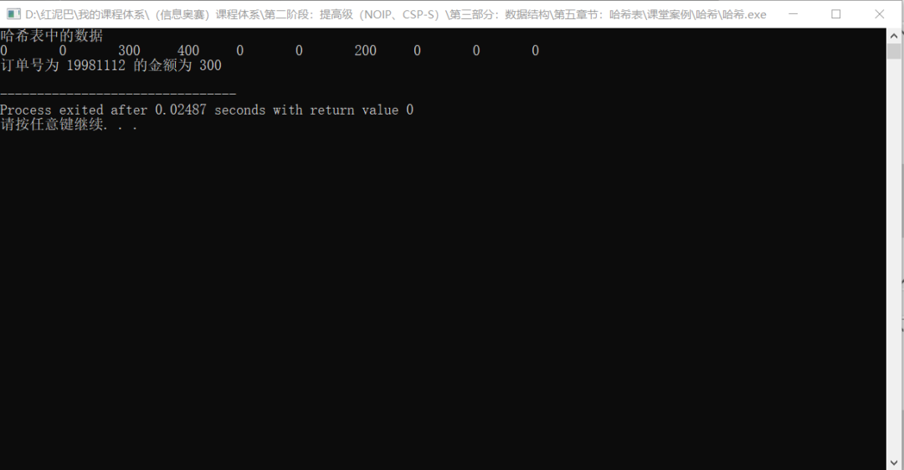
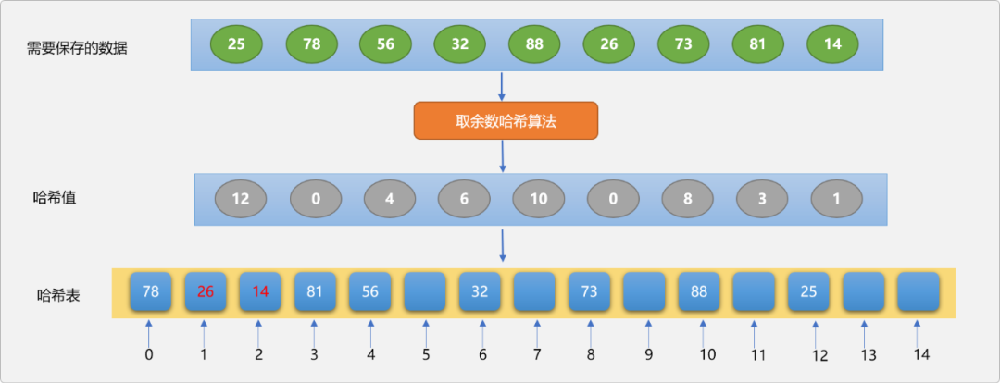
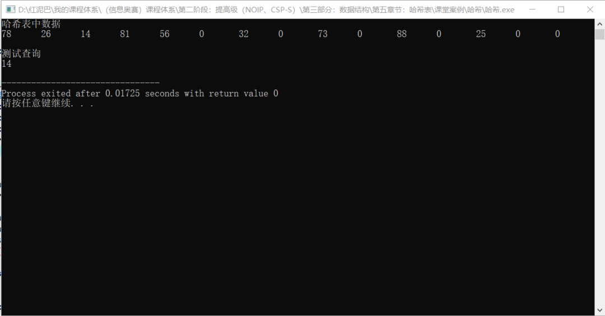
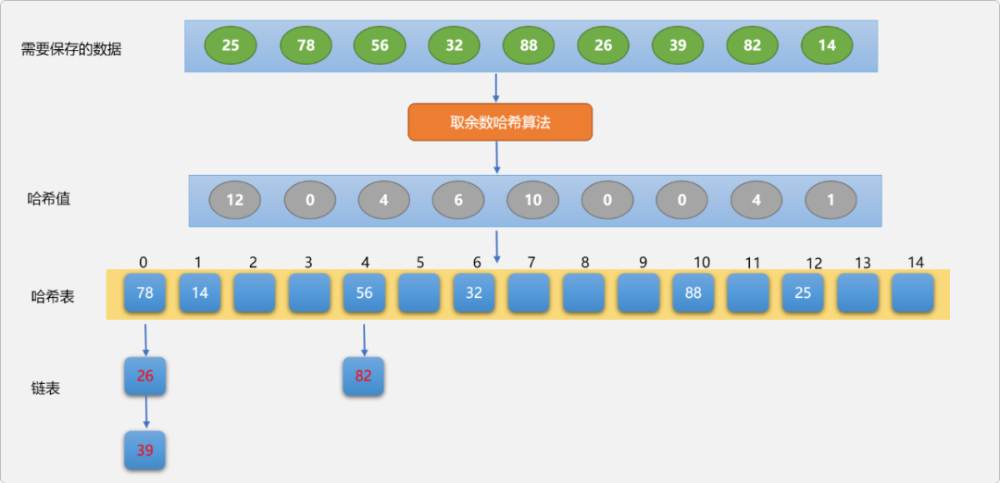
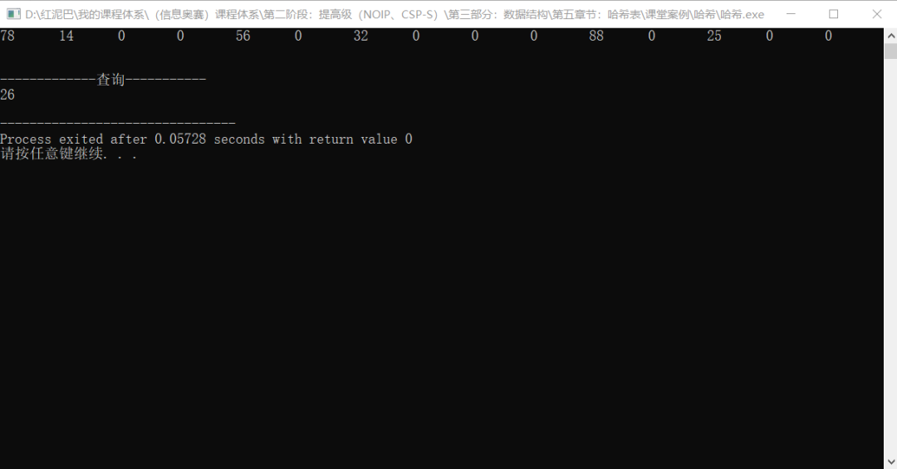

C++ 哈希表查询_进入哈希函数结界的世界
1. 前言
哈希表或称为散列表，是一种常见的、使用频率非常高的数据存储方案。
哈希表属于抽象数据结构，需要开发者按哈希表数据结构的存储要求进行 API 定制，对于大部分高级语言而言，都会提供已经实现好的、可直接使用的 API，如 JAVA 中有 MAP 集合、C++ 中的 MAP 容器，Python 中的字典……
使用者可以使用 API 中的方法完成对哈希表的增、删、改、查……一系列操作。
如何学习哈希表？
可以从 2 个角度开始：
- 使用者角度：只需要知道
哈希表是基于键、值对存储解决方案，另需要熟悉不同计算机语言提供的基于哈希表数据结构的API实现，学会使用API。 - 开发者的角度：知道
哈希表底层实现原理，以及实现过程中需要解决的各种问题。本文将站在开发者的角度，带着大家一起探究哈希的世界。
2. 哈希表
什么是哈希表？
哈希表是基于键、值对存储的数据结构，底层一般采用的是数组。众所知之，数组的查询速度非常快，时间复杂度是常量级别 O（1）。
数组的内存存储结构是连续区域，只要给定数据在数组中的位置，就能直接查询到数据。理论上是这么回事，但在实际操作过程，查询数据的时间复杂度并不一定总是常量级别。
如存储下面的学生信息，学生信息包括学生的姓名和学号。在存储学生数据时，如果把学号为 0 的学生存储在列表 0 位置，学号为 1 的学生存储在列表 1 位置……

因学生的学号和数组的索引号相映射，一旦知道了学生的学号也就知道了学生数据的存储位置，此时查询时间复杂度为 O(1)。
Tips： 之所以可以达到常量级，是因为这里有信息关联（学生学号关联到数据的存储位置）。另，学生的学号是公开信息也是常用信息，很容易获取。
但是，不是存储任何数据时，都可以找到与位置相关联的信息。比如存储英文单词，不可能为每一个英文单词编号，即使编号了，编号仅仅只是流水号，没有数据含义的编号对于使用者来讲是不友好的，谁也无法记住哪个英文单词对应哪个编号。
如果使用数组存储英文单词，因没有单词的存储位置。查询时，还得使用诸如线性、二分……之类的查询方法，这时的时间复杂度由具体的查询算法的时间复杂度决定。
同样，如果对上述存储在数组中的学生信息进行了插入、删除……等操作，改变了数据原来的位置后，因破坏了学号与位置关联信息，再查询时也只能使用其它查询算法，不可能达到常量级。
是否存在一种方案，能最大化地优化数据的存储和查询？
通过上述的分析，可以得出一个结论，要提高查询的速度，得想办法把数据与位置进行关联。而哈希表的核心思想便是如此。
2.1 哈希函数
哈希表引入了关键字概念，关键字可以认为是数据的别名。如上表，可以给每一个学生起一个别名，这个就是关键字。
有了关键字后，再把关键字映射成列表中的一个有效位置，映射方法就是哈希表中最重要的概念哈希函数。
Tips：
关键字是一个桥梁，尽可能让关键字描述数据的含义。 这里的关键字是姓名的拼音缩写，关键字和数据的关联性较强，这样即关联到真正数据又关联到哈希表中的位置，方便记忆和查询。关键字也可以是数据本身。
哈希函数的功能：提供把关键字映射到列表中的位置算法，是哈希表存储数据的核心所在。如下图，演示数据、哈希函数、哈希表之间的关系，可以说哈希函数是数据进入哈希表的入口。

数据最终会存储在数组中的哪一个位置，完全由哈希算法决定。
当需要查询学生数据时，同样需要调用哈希函数对关键字进行换算，计算出数据在列表中的位置后就能很容易查询到数据。
如果忽视哈希函数的时间复杂度，基于哈希表的数据存储和查询时间复杂度是 O(1)。
如此说来哈希函数算法设计的优劣是影响哈希表性能的关键所在。
2.2 哈希算法
哈希算法决定了数据的最终存储位置，不同的哈希算法设计方案，也关乎哈希表的整体性能，所以，哈希算法就变得的尤为重要。
下文将纵横比较几种常见的 哈希算法的设计方案。
Tip： 无论使用何种
哈希算法，都有一个根本，哈希后的结果一定是一个数字，表示哈希表中的一个有效位置。也称为哈希值。
使用哈希表存储数据时，关键字可以是数字类型也可以是非数字类型，其实，关键字可以是任何一种类型。这里先讨论当关键字为非数字类型时设计哈希算法的基本思路。
如前所述，已经为每一个学生提供了一个以姓名的拼音缩写的关键字。
现在如何把关键字映射到数组的一个有效位置？
这里可以简单地把拼音看成英文中的字母，先分别计算每一个字母在字母表中的位置，然后相加，得到的一个数字。
使用上面的哈希思想对每一个学生的关键字进行哈希：
zjl的哈希值为26+10+12=48。llj的哈希值为12+12+10=34。cl的哈希值为3+12=15。zxy的哈希值为26+25+24=75。
前文说过哈希值是表示数据在列表中的存储位置，现在假设一种理想化状态，学生的姓名都是 3 个汉字，意味着关键字也是 3 个字母，采用上面的的哈希算法，最大的哈希值应该是zzz=26+26+26=78，意味着至少应该提供一个长度为 78的哈希表 。
即使现在仅仅只存储 4 名学生，因无法保证学生的关键字不出现zzz，所以列表长度还是需要 78。如下图所示。

采用这种哈希算法会导致列表的空间浪费严重，最直观想法是对哈希值再做约束，如除以 4 再取余数，把哈希值限制在 4 之内，4 个数据对应 4 个哈希值。我们称这种取余数方案为取余数算法。
Tips： 取余数法中，除数一般选择小于哈希表长度的素数。本文介绍其它哈希算法时，也会使用取余数法对哈希值进行适当范围的收缩。
重新对 4 名学生的关键字进行哈希。
zjl的哈希值为26+10+12=48，48除以4取余数，结果是0。llj的哈希值为12+12+10=34，34除以4取余数，结果是2。cl的哈希值为3+12=15，15除以4取余数，结果是3。zzz的哈希值为26+26+26=78，78除以4取余数，结果是2。

演示图上出现了一个很奇怪的现象，没有看到李连杰的存储信息。
4个存储位置存储 4学生，应该是刚刚好，但是，只存储了 3名学生。且还有 1个位置是空闲的。现在编码验证一下，看是不是人为因素引起的。
#include <iostream>
using namespace std;
/*
*哈希函数
*/
int hashCode(string key) {
// 设置字母 A 的在字母表中的位置是 1
int pos = 0;
for(int i=0; i<key.size(); i++) {
char myChar= key[i];
if(myChar>='A' && myChar<='Z')
myChar+=32;
pos+= myChar-97+1;
}
return pos % 4;
}
测试代码：
int main(int argc, char** argv) {
// 哈希表
string hashTable[4];
// 计算关键字的哈希值
int idx = hashCode("zjl");
// 根据关键字换算出来的位置存储数据
hashTable[idx] = "周杰伦";
idx = hashCode("llj");
hashTable[idx] = "李连杰";
idx = hashCode("cl");
hashTable[idx]= "成龙";
idx = hashCode("zzz");
hashTable[idx] = "张志忠";
cout<<"输出所有信息"<<endl;
for(int i=0; i<4; i++) {
cout<<hashTable[i]<<"\t";
}
return 0;
}
执行代码，输出结果，依然还是没有看到李连杰的信息。

原因何在？
这是因为李连杰和张志忠的哈希值都是 2 ，导致在存储时，后面存储的数据会覆盖前面存储的数据，这就是哈希中的典型问题，哈希冲突问题。
所谓哈希冲突，指不同的关键字在进行哈希算法后得到相同的哈希值，这意味着，不同关键字所对应的数据会存储在同一个位置，这肯定会发生数据丢失，所以需要提供解决冲突的算法。
Tip： 研究
哈希表，归根结底，是研究如何计算哈希值以及如何解决哈希值冲突的问题。
针对上面的问题，有一种想当然的冲突解决方案，扩展列表的存储长度，如把列表扩展到长度为 8。
Tips： 直观思维是：扩展列表长度，哈希值的范围会增加，冲突的可能性会降低。
int hashCode(string key) {
// 省略……
return pos % 8;
}
int main(int argc, char** argv) {
// 哈希表
string hashTable[8];
// 省略……
for(int i=0; i<8; i++) {
cout<<hashTable[i]<<"\t";
}
return 0;
}
貌似解决了冲突问题，其实不然，当试着设置列表的长度为6、7、8、9、10时，只有当长度为 8时没有发生冲突，这还是在要存储的数据是已知情况下的尝试。
如果数据是动态变化的，显然这种扩展长度的方案绝对不是本质解决冲突的方案。即不能解决冲突，且产生大量空间浪费。
如何解决哈希冲突，会在后文详细介绍，这里还是回到哈希算法上。
综上所述，我们对哈希算法的理想要求是：
- 为每一个
关键字生成一个唯一的哈希值，保证每一个数据都有只属于自己的存储位置。 - 哈希算法的性能时间复杂度要低。
现实情况是，同时满足这 2 个条件的哈希算法几乎是不可能有的，面对数据量较多时，哈希冲突是常态。所以，只能是尽可能满足。
因冲突的存在，即使为 100 个数据提供 100 个有效存储空间，还是会有空间闲置。这里把实际使用空间和哈希表提供的有效空间相除，得到的结果，称之为哈希表的占有率（载荷因子）。
如上述，当列表长度为 4时， 占有率为 3/4=0.75，当列表长度为 8 时，占有率为 4/8=0.5，一般要求占率控制 在0.6~0.9之间。
2.3 常见哈希算法
前面在介绍什么是哈希算法时，提到了取余数法，除此之外，还有几种常见的哈希算法。
2.3.1 折叠法
折叠法：将关键字分割成位数相同的几个部分（最后一部分的位数可以不同）然后取这几部分的叠加和（舍去进位）作为哈希值。
折叠法又分移位叠加和间界叠加。
- 移位叠加：将分割后的每一部分的最低位对齐，然后相加。
- 间界叠加：从一端沿分割线来回折叠，然后对齐相加。
因有相加求和计算，折叠法适合数字类型或能转换成数字类型的关键字。假设现在有很多商品订单信息，为了简化问题，订单只包括订单编号和订单金额。
现在使用用哈希表存储订单数据，且以订单编号为关键字，订单金额为值。
| 订单编号 | 订单金额 |
|---|---|
20201011 |
400.00 |
19981112 |
300.00 |
20221212 |
200 |
移位叠法换算关键字的思路：
第一步：把订单编号 20201011 按每3位一组分割，分割后的结果：202、010、11。
Tips：按
2位一组还是3位一组进行分割，可以根据实际情况决定。
第二步： 把分割后的数字相加 202+010+11，得到结果：223。再使用取余数法，如果哈希表的长度为 10，则除以 10后的余数为3。
Tips： 这里除以
10仅是为了简化问题细节，具体操作时，很少选择列表的长度。
第三步：对其它的关键字采用相同的处理方案。
| 关键字 | 哈希值 |
|---|---|
20201011 |
3 |
19981112 |
2 |
20221212 |
6 |
编码实现保存商品订单信息：
#include <iostream>
using namespace std;
/*
*移位叠加哈希算法
*/
int hashCode(int key,int hashTableSize) {
// 转换成字符串
string keyS =to_string(key);
// 保存求和结果
int s = 0;
int idx=0;
while(idx<keyS.size()) {
// 截取子字符串
string subStr= keyS.substr(idx,3);
s+=stoi(subStr);
idx+=3;
}
return s % hashTableSize;
}
//测试
int main(int argc, char** argv) {
// 商品信息
double products[3][2] = {{20201011, 400.00}, {19981112, 300}, {20221212, 200}};
// 哈希表长度
int hash_size = 10;
// 哈希表
double hash_table[10] = {0.0};
// 以哈希表方式进行存储
for(int i=0; i<3; i++) {
int key = hashCode(products[i][0], hash_size);
hash_table[key] =products[i][1];
}
cout<<"哈希表中的数据"<<endl;
for(int i=0; i<10; i++)
cout<< hash_table[i]<<"\t";
cout<<endl;
// 根据订单号进行查询
int hash_val = hashCode(19981112, hash_size);
double val = hash_table[hash_val];
cout<<"订单号为 "<<19981112<<" 的金额为 "<<val<<endl;
return 0;
}
输出结果：

间界叠加法：
间界叠加法，会间隔地把要相加的数字进行反转。
如订单编号 19981112 按3位一组分割，分割后的结果：199、811、12，间界叠加操作求和表达式为 199+118+12=339，再把结果 339 % 10=9。
编码实现间界叠加算法：
#include <iostream>
using namespace std;
/*
*间界叠加哈希算法
*/
int hashCode(int key,int hashTableSize) {
// 转换成字符串
string keyS =to_string(key);
// 保存求和结果
int s = 0;
int idx=0;
int count=0;
while(idx<keyS.size()) {
count++;
//截取子字符串
string subStr= keyS.substr(idx,3);
if(count % 2==0 ) {
string temp;
//反转
for(int j=subStr.size()-1; j>=0; j--) {
temp+=subStr[j];
}
subStr=temp;
}
s+=stoi(subStr);
idx+=3;
}
return s % hashTableSize;
}
int main(int argc, char** argv) {
//省略测试……
return 0;
}
输出结果：
2.3.2 平方取中法
平方取中法：先是对关键字求平方，再在结果中取中间位置的数字。
求平方再取中算法，是一种较常见的哈希算法，从数学公式可知，求平方后得到的中间几位数字与关键字的每一位都有关，取中法能让最后计算出来的哈希值更均匀。
因要对关键字求平方，关键字只能是数字或能转换成数字的类型，至于关键字本身的大小范围限制，要根据使用的计算机语言灵活设置。
如下面的图书数据，图书包括图书编号和图书名称。现在需要使用哈希表保存图书信息，以图书编号为关键字，图书名称为值。
| 图书编号 | 图书名称 |
|---|---|
58 |
python 从入门到精通 |
67 |
C++ STL |
98 |
Java 内存模型 |
使用平方取中法计算关键字的哈希值：
第一步：对图书编号 58 求平方，结果为 3364。
第二步：取 3364的中间值36，然后再使用取余数方案。如果哈希表的长度为 10，则 36%10=6。
第三步：对其它的关键字采用相同的计算方案。
编码实现平方取中算法：
#include <iostream>
using namespace std;
/*
*哈希算法
*平方取中
*/
int hash_code(int key,int hash_table_size) {
// 求平方
int res = key*key;
// 取中间值，这里取中间 2 位（简化问题）
res =stoi(to_string(res).substr(1,2));
// 取余数
return res % hash_table_size;
}
//测试
int main(int argc, char** argv) {
int hash_table_size = 10;
int hash_val=0;
string hash_table[hash_table_size] ;
// 图书信息
string books[3][2] = {{ "58", "python 从入门到精通"},{ "67", "C++ STL"}, {"98", "Java 内存模型"}};
for(int i=0; i<3; i++) {
hash_val = hash_code( stoi( books[i][0] ), hash_table_size);
hash_table[hash_val]=books[i][1];
}
// 显示哈希表中的数据
cout<<"哈希表中的数据："<<endl;
for(int i=0; i<10; i++) {
cout<<hash_table[i]<<"\t";
}
cout<<endl;
// 根据编号进行查询
hash_val = hash_code(67, hash_table_size);
string val = hash_table[hash_val];
cout<<"编号为"<<67<<"的书名为"<<67<<val<<endl;
}
上述求平方取中间值的算法仅针对于本文提供的图书数据，如果需要算法具有通用性，则需要根据实际情况修改。
Tips： 不要被
取中的中字所迷惑，不一定是绝对中间位置的数字。
2.3.3 直接地址法
直接地址法：提供一个与关键字相关联的线性函数。如针对上述图书数据，可以提供线性函数 f(k)=2*key+10。
Tips： 系数
2和常数10的选择会影响最终生成的哈希值的大小。可以根据哈希表的大小和操作的数据含义自行选择。
key 为图书编号。当关键字不相同时，使用线性函数得到的值也是唯一的，所以，不会产生哈希冲突，但是会要求哈希表的存储长度比实际数据要大。
这种算法在实际应用中并不多见。
实际应用时，具体选择何种哈希算法，完全由开发者定夺，哈希算法的选择没有固定模式可循，虽然上面介绍了几种算法，只是提供一种算法思路。
2.4 哈希冲突
哈希冲突是怎么引起的，前文已经说过。现在聊聊常见的几种哈希冲突解决方案。
2.4.1 线性探测
当发生哈希冲突后，会在冲突位置之后寻找一个可用的空位置。如下图所示，使用取余数哈希算法，保存数据到哈希表中。
Tips： 哈希表的长度设置为
15，除数设置为13。

解决冲突的流程：
78和26的哈希值都是0。因为78在26的前面，78先占据哈希表的0位置。- 当存储
26时，只能以0位置为起始位置，向后寻找空位置，因1位置没有被其它数据占据，最终保存在哈希表的1位置。 - 当存储数字
14时，通过哈希算法计算，其哈希值是1，本应该要保存在哈希表中1的位置，因1位置已经被26所占据，只能向后寻找空位置，最终落脚在2位置。
线性探测法让发生哈希冲突的数据保存在其它数据的哈希位置，如果冲突的数据较多，则占据的本应该属于其它数据的哈希位置也较多，这种现象称为哈希聚集。
查询流程：
以查询数据14为例。
- 计算
14的哈希值，得到值为1，根据哈希值在哈希表中找到对应位置。 - 查看对应位置是否存在数据，如果不存在，宣告查询失败，如果存在，则需要提供数据比较方法。
- 因
1位置的数据26并不等于14。于是，继续向后搜索，并逐一比较。 - 最终可以得到结论
14在哈希表的编号为2的位置。
所以，在查询过程中，除了要提供哈希函数，还需要提供数据比较函数。
删除流程：
以删除数字26为例。
-
按上述的查询流程找到数字
26在哈希表中的位置1。 -
设置位置
1为删除状态，一定要标注此位置曾经保存过数据，而不能设置为空状态。为什么？
Tips： 如果设置为空状态，则在查询数字
14时，会产生错误的返回结果，会认为14不存在。为什么？自己想想。
编码实现线性探测法：
添加数据：
#include <iostream>
using namespace std;
/*
*线性探测法解决哈希冲突
*/
int hash_code(int key,int hash_table[],int size,int num) {
// 简单的取余数法计算哈希值
int hash_val = key % num;
// 检查此位置是否已经保存其它数据
if(hash_table[hash_val]!=0) {
// 则从hash_val 之后寻找空位置
for(int i=hash_val + 1; i<size + hash_val; i++ ) {
if (i >= size)
i = i % size;
if (hash_table[i]==0) {
hash_val = i;
break;
}
}
}
return hash_val;
}
Tip：为了保证当哈希值发生冲突后，如果从冲突位置查到哈希表的结束位置还是没有找到空位置，则再从哈希表的起始位置，也就是
0位置再搜索到冲突位置。冲突位置是起点也是终点，构建一个查找逻辑环，以保证一定能找到空位置。
基于线性探测的数据查询过程和存储过程大致相同：
int get(int key,int hash_table[],int size,int num) {
// 取余数法计算哈希值
int hash_val = key % num;
//检查此位置是否已经保存数据
if (hash_table[hash_val]==0)
//不存在
hash_val= -1;
if (hash_table[hash_val] != key) {
// 则从hash_val 之后寻找
for (int i=hash_val + 1; i<size + hash_val; i++) {
if (i >= size)
i = i % size;
if (hash_table[i] == key) {
hash_val = i;
break;
}
}
}
return hash_val;
}
测试存储和查询：
int main(int argc, char** argv) {
//哈希表
int hash_table[15] = {0};
int hash_val=-1;
int src_nums[] = {25, 78, 56, 32, 88, 26, 73, 81, 14};
for(int i=0; i<sizeof(src_nums)/4; i++) {
hash_val = hash_code(src_nums[i], hash_table,15,13);
hash_table[hash_val] = src_nums[i];
}
cout<<"哈希表中数据"<<endl;
for(int i=0; i<15; i++)
cout<<hash_table[i]<<"\t";
cout<<endl;
cout<<"测试查询"<<endl;
hash_val=get(14,hash_table,15,13);
if(hash_val!=-1)
cout<<hash_table[hash_val]<<endl;
else
cout<<"无此数据"<<endl;
return 0;
}
输出结果：

为了减少数据聚集，可以采用增量线性探测法，所谓增量指当发生哈希冲突后，探测空位置时，使用步长值大于 1的方式跳跃式向前查找。目的是让数据分布均匀，减小数据聚集。
除了采用增量探测之外，还可以使用再哈希的方案。也就是提供2 个哈希函数，第 1 次哈希值发生冲突后，再调用第 2 个哈希函数再哈希，直到冲突不再产生。这种方案会增加计算时间。
2.4.2 链表法
上面所述的冲突解决方案的核心思想是，当冲突发生后，在哈希表中再查找一个有效空位置。
这种方案的优势是不会产生额外的存储空间，但易产生数据聚集，会让数据的存储不均衡，并且会违背初衷，通过关键字计算出来的哈希值并不能准确描述数据正确位置。
链表法应该是所有解决哈希冲突中较完美的方案。所谓链表法，指当发生哈希冲突后，以冲突位置为首结点构建一条链表，以链表方式保存所有发生冲突的数据。如下图所示：

链表方案解决冲突，无论在存储、查询、删除时都不会影响其它数据位置的独立性和唯一性，且因链表的操作速度较快，对于哈希表的整体性能都有较好改善。
Tips： 使用链表法时，哈希表中保存的是链表的首结点。首结点可以保存数据也可以不保存数据。
编码实现链表法：链表实现需要定义 2 个类，1 个是结点类，1 个是哈希类。
#include <iostream>
using namespace std;
/*
*结点类
*/
struct HashNode {
int value;
HashNode* next_node;
HashNode() {
this->next_node=NULL;
}
HashNode(int value) {
this->value=value;
this->next_node=NULL;
}
HashNode(int value,HashNode* next_node) {
this->value=value;
this->next_node=next_node;
}
};
/*
*哈希类
*/
class HashTable {
private:
//哈希表
HashNode** hashTable;
//实际数据大小
int size = 0;
public:
HashTable(int size) {
//初始大小
this->size=size;
//初始哈希表
this->hashTable=new HashNode*[size];
for(int i=0; i<this->size; i++)
this->hashTable[i]=NULL;
}
/*
*哈希函数
*/
int hash_code(int key) {
// 这里仅为说明问题，13 的选择是固定的
int hash_val = key % 13;
return hash_val;
}
/*
*存储数据
*key:关键字
*value:值
*/
void put(int key,int value) {
int hash_val = this->hash_code(key);
// 新结点
HashNode* new_node=new HashNode(value);
if(this->hashTable[hash_val]==NULL ) {
// 本代码采用首结点保存数据方案
this->hashTable[hash_val] = new_node;
} else {
//在链表上查找可存储位置
HashNode* move =this->hashTable[hash_val];
while (move->next_node!=NULL)
move = move->next_node;
move->next_node = new_node;
}
}
/*
*查询数据
*/
HashNode* get(int key) {
int hash_val = this->hash_code(key);
if (this->hashTable[hash_val]==NULL)
// 数据不存在
return NULL;
if (this->hashTable[hash_val]->value == key) {
// 首结点就是要找的数据
return this->hashTable[hash_val];
}
// 移动指针
HashNode* move = this->hashTable[hash_val]->next_node;
while (move->value != key && move!=NULL)
move = move->next_node;
return move;
}
/*
*输出哈希表中数据
*/
void showAll() {
for(int i=0; i<this->size; i++) {
if(this->hashTable[i]==NULL) {
cout<<0<<"\t";
continue;
}
cout<<this->hashTable[i]->value<<"\t";
}
cout<<endl;
}
};
//测试
int main(int argc, char** argv) {
// 原始数据
int srcNums[] = {25, 78, 56, 32, 88, 26, 39, 82, 14};
// 哈希对象
HashTable hashTable(15);
// 把数据添加到哈希表中
for(int i=0; i<sizeof(srcNums)/4; i++) {
hashTable.put( srcNums[i] , srcNums[i]);
}
// 输出哈希表中的首结点数据
hashTable.showAll();
cout<<"\n-------------查询-----------"<<endl;
HashNode* node=hashTable.get(26);
cout<<node->value<<endl;
return 0;
}
输出结果：

3.总结
哈希表是一种高级数据结构，其存储、查询性能非常好，时间复杂度可以达到常量级，成为很多实际应用场景下的首选。
研究哈希表，着重点就是搞清楚哈希算法以及如何解决哈希冲突。在算法的世界里，需要有经验的传承，但不要拘泥固定的模板，开发者可以根据自己的需要自行设计哈希算法。
一枚大果壳
阅读 157
编程驿站
191